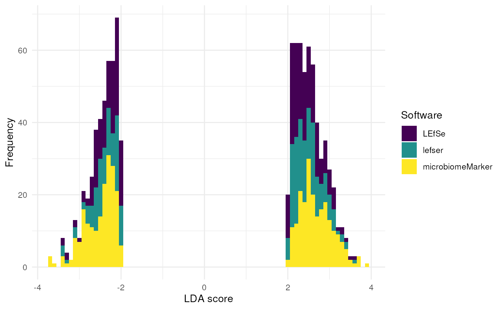
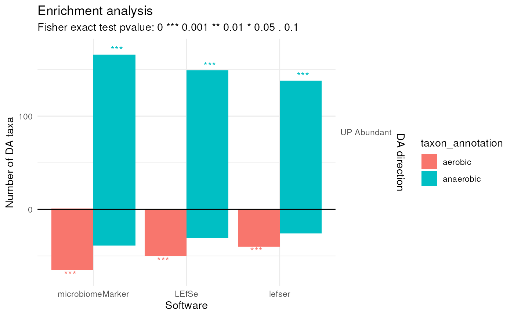

library(readr)
library(dplyr)
library(tidyr)
library(ggplot2)
library(purrr)
library(microbiomeMarker)
library(benchdamic)
library(MicrobiomeBenchmarkData)
library(ggpubr)Create a temporary directory to store the files:
fName <- system.file(
"extdata", "gingival_results_2024-09-18.zip",
package = "MicrobiomeBenchmarkDataLefse", mustWork = TRUE
)
tmpDir <- tempfile()
unzip(zipfile = fName, exdir = tmpDir)
fls <- list.files(tmpDir, full.names = TRUE)
names(fls) <- list.files(tmpDir, full.names = FALSE)Read the data and make it uniform:
## Results from LEfSe (run in Docker)
lefseDat <- read_tsv(
grep("\\.res", fls, value = TRUE),
col_names = c("feature", "x", "sample", "lda", "rawP"),
show_col_types = FALSE
) |>
select(-x) |>
drop_na() |>
mutate(
feature = sub("(OTU)(97)(\\d+)$", "\\1_\\2.\\3", feature)
) |>
mutate(rawP = as.double(rawP)) |>
mutate(adjP = p.adjust(rawP)) |>
dplyr::rename(enGrp = sample) |>
mutate(software = "LEfSe") |>
tibble::column_to_rownames(var = "feature") |>
mutate(
lda = case_when(
enGrp == "subgingival_plaque" ~ lda,
enGrp == "supragingival_plaque" ~ -lda,
)
) |>
arrange(lda)
## Results from lefser
lefserDat <- read_csv(
grep("lefser\\.csv", fls, value = TRUE),
show_col_types = FALSE
) |>
tibble::column_to_rownames(var = "features") |>
dplyr::rename(lda = scores) |>
mutate(
## I got the enriched groups by comparing this result with
## lefseDat and mmDat
enGrp = case_when(
lda < 0 ~ "supragingival_plaque",
lda > 0 ~ "subgingival_plaque",
),
# lda = abs(lda),
rawP = 0.0099,
adjP = 0.099
) |>
mutate(software = "lefser") |>
arrange(lda)
## Results from microbiomeMarker
mmDat <- readRDS(
grep("mm\\.rds", fls, value = TRUE),
) |>
marker_table() |>
as.matrix() |>
as.data.frame() |>
magrittr::set_rownames(NULL) |>
tibble::column_to_rownames("feature") |>
dplyr::rename(
enGrp = enrich_group,
lda = ef_lda,
rawP = pvalue,
adjP = padj
) |>
mutate_at(
.vars = c("lda", "rawP", "adjP"),
.funs = as.double
) |>
mutate(software = "microbiomeMarker") |>
mutate(
lda = case_when(
enGrp == "subgingival_plaque" ~ lda,
enGrp == "supragingival_plaque" ~ -lda,
)
) |>
arrange(lda)
DA <- list(
LEfSe = lefseDat,
lefser = lefserDat,
microbiomeMarker = mmDat
)
map_int(DA, nrow)
#> LEfSe lefser microbiomeMarker
#> 327 281 410
DA |>
bind_rows() |>
ggplot(aes(lda)) +
geom_histogram(aes(fill = software), binwidth = 0.1) +
scale_fill_viridis_d(option = "D", name = "Software") +
labs(
x = "LDA score",
y = "Frequency"
) +
theme_minimal()
Create a list object compatible with the benchdamic
workflow:
createBenchObj <- function(x) {
pValMat <- x[, c("rawP", "adjP"), drop = FALSE]
statInfo <- x
name = unique(x[["software"]])
list(
pValMat = pValMat,
statInfo = statInfo,
name = name
)
}
DA_output <- map(DA, createBenchObj)
str(DA_output, max.level = 2)
#> List of 3
#> $ LEfSe :List of 3
#> ..$ pValMat :'data.frame': 327 obs. of 2 variables:
#> ..$ statInfo:'data.frame': 327 obs. of 5 variables:
#> ..$ name : chr "LEfSe"
#> $ lefser :List of 3
#> ..$ pValMat :'data.frame': 281 obs. of 2 variables:
#> ..$ statInfo:'data.frame': 281 obs. of 5 variables:
#> ..$ name : chr "lefser"
#> $ microbiomeMarker:List of 3
#> ..$ pValMat :'data.frame': 410 obs. of 2 variables:
#> ..$ statInfo:'data.frame': 410 obs. of 5 variables:
#> ..$ name : chr "microbiomeMarker"Get biological information
tse <- getBenchmarkData("HMP_2012_16S_gingival_V35", dryrun = FALSE)[[1]]
bioData <- tse |>
rowData() |>
as.data.frame()
cbfColors <- c("#D55E00", "#009E73", "#0072B2")
posData <- createPositives(
object = DA_output,
priorKnowledge = bioData, enrichmentCol = "taxon_annotation",
namesCol = NULL,
slot = "statInfo", colName = "lda", type = "logfc",
direction = "lda",
threshold_pvalue = 1, threshold_logfc = 0,
top = seq(5, 100, 5),
alternative = "g",
verbose = FALSE,
TP = list(
c("UP Abundant", "anaerobic"),
c("DOWN Abundant", "aerobic")
),
FP = list(
c("UP Abundant", "aerobic"),
c("DOWN Abundant", "anaerobic")
)
)
posPlot <- plotPositives(posData)
for (i in seq_along(posPlot$layers)) {
## Remove layers (geom_line and geom_point)
## This is necessary to add new layers with shapes and colors of choice
posPlot$layers[[1]] <- NULL
}
posPlot <- posPlot +
geom_line(
aes(x = top, y = TP - FP, linetype = method)
) +
geom_point(
aes(x = top, y = TP - FP, shape = method)
) +
scale_linetype(name = "Software") +
scale_shape_manual(values = c(1, 2, 3), name = "Software") +
scale_color_manual(values = cbfColors, name = "Software") +
theme_minimal()
#> Scale for colour is already present.
#> Adding another scale for colour, which will replace the existing scale.
posPlot ### Enrichemnt plot
enData <- createEnrichment(
object = DA_output,
priorKnowledge = bioData, enrichmentCol = "taxon_annotation",
namesCol = NULL,
slot = "statInfo", colName = "lda", type = "logfc",
direction = "lda",
## No threshold since all results included here
## are significant
threshold_pvalue = 1, threshold_logfc = 0,
top = NULL,
alternative = "greater",
verbose = FALSE
)
enPlot <- plotEnrichment(enData, "taxon_annotation", c("aerobic", "anaerobic"))
enPlot <- enPlot +
labs(x = "Software") +
theme_minimal()
enPlot
myFun <- function(x) {
x |>
tibble::rownames_to_column(var = "direction")
}
enDatMod <- map(enData, ~ {
.x$summaries |>
map(myFun) |>
bind_rows() |>
pivot_longer(
names_to = "annotation", values_to = "ntaxa",
cols = c(aerobic, anaerobic, facultative_anaerobic)
) |>
filter(!is.na(ntaxa))
}) |>
bind_rows(.id = "software") |>
mutate(
direction = case_when(
direction == "DOWN Abundant" ~ "Supragingival",
direction == "UP Abundant" ~ "Subgingival"
)
) |>
mutate(
sig = case_when(
pvalue < 0.05 & pvalue >= 0.01 ~ "*" ,
pvalue < 0.01 & pvalue >= 0.001 ~ "**",
pvalue < 0.001 ~ "***",
TRUE ~ ""
)
)
enPlotMod <- enDatMod |>
ggplot(aes(software, ntaxa)) +
geom_col(
aes(fill = annotation),
position = position_dodge2(width = 0.9)
) +
geom_text(
aes(label = sig, color = annotation),
position = position_dodge2(width = 0.9)
) +
facet_wrap(~direction) +
scale_fill_manual(
values = cbfColors, name = "Annotations"
) +
labs(
x = "Software", y = "Number of DA taxa"
) +
guides(color="none") +
theme_minimal() +
theme(
axis.text.x = element_text(angle = 45, hjust = 1),
legend.position = "bottom"
)
enPlotMod
sessioninfo::session_info()
#> ─ Session info ───────────────────────────────────────────────────────────────
#> setting value
#> version R version 4.4.1 (2024-06-14)
#> os Ubuntu 22.04.4 LTS
#> system x86_64, linux-gnu
#> ui X11
#> language en
#> collate en_US.UTF-8
#> ctype en_US.UTF-8
#> tz Etc/UTC
#> date 2024-09-20
#> pandoc 3.2 @ /usr/bin/ (via rmarkdown)
#>
#> ─ Packages ───────────────────────────────────────────────────────────────────
#> package * version date (UTC) lib source
#> abind 1.4-8 2024-09-12 [1] RSPM (R 4.4.0)
#> ade4 1.7-22 2023-02-06 [1] RSPM (R 4.4.0)
#> ALDEx2 1.36.0 2024-04-30 [1] Bioconductor 3.19 (R 4.4.1)
#> ANCOMBC 2.6.0 2024-04-30 [1] Bioconductor 3.19 (R 4.4.1)
#> annotate 1.82.0 2024-04-30 [1] Bioconductor 3.19 (R 4.4.1)
#> AnnotationDbi 1.66.0 2024-05-01 [1] Bioconductor 3.19 (R 4.4.1)
#> ape 5.8 2024-04-11 [1] RSPM (R 4.4.0)
#> aplot 0.2.3 2024-06-17 [1] RSPM (R 4.4.0)
#> backports 1.5.0 2024-05-23 [1] RSPM (R 4.4.0)
#> base64enc 0.1-3 2015-07-28 [1] RSPM (R 4.4.0)
#> beachmat 2.20.0 2024-04-30 [1] Bioconductor 3.19 (R 4.4.1)
#> beeswarm 0.4.0 2021-06-01 [1] RSPM (R 4.4.0)
#> benchdamic * 1.10.0 2024-04-30 [1] Bioconductor 3.19 (R 4.4.1)
#> biglm 0.9-3 2024-06-12 [1] RSPM (R 4.4.0)
#> Biobase * 2.64.0 2024-04-30 [1] Bioconductor 3.19 (R 4.4.1)
#> BiocFileCache 2.12.0 2024-04-30 [1] Bioconductor 3.19 (R 4.4.1)
#> BiocGenerics * 0.50.0 2024-04-30 [1] Bioconductor 3.19 (R 4.4.1)
#> BiocNeighbors 1.22.0 2024-04-30 [1] Bioconductor 3.19 (R 4.4.1)
#> BiocParallel 1.38.0 2024-04-30 [1] Bioconductor 3.19 (R 4.4.1)
#> BiocSingular 1.20.0 2024-04-30 [1] Bioconductor 3.19 (R 4.4.1)
#> biomformat 1.32.0 2024-04-30 [1] Bioconductor 3.19 (R 4.4.1)
#> Biostrings * 2.72.1 2024-06-02 [1] Bioconductor 3.19 (R 4.4.1)
#> bit 4.0.5 2022-11-15 [1] RSPM (R 4.4.0)
#> bit64 4.0.5 2020-08-30 [1] RSPM (R 4.4.0)
#> bitops 1.0-8 2024-07-29 [1] RSPM (R 4.4.0)
#> blob 1.2.4 2023-03-17 [1] RSPM (R 4.4.0)
#> bluster 1.14.0 2024-04-30 [1] Bioconductor 3.19 (R 4.4.1)
#> boot 1.3-30 2024-02-26 [2] CRAN (R 4.4.1)
#> broom 1.0.6 2024-05-17 [1] RSPM (R 4.4.0)
#> bslib 0.8.0 2024-07-29 [1] RSPM (R 4.4.0)
#> cachem 1.1.0 2024-05-16 [1] RSPM (R 4.4.0)
#> car 3.1-2 2023-03-30 [1] RSPM (R 4.4.0)
#> carData 3.0-5 2022-01-06 [1] RSPM (R 4.4.0)
#> caTools 1.18.3 2024-09-04 [1] RSPM (R 4.4.0)
#> cellranger 1.1.0 2016-07-27 [1] RSPM (R 4.4.0)
#> checkmate 2.3.2 2024-07-29 [1] RSPM (R 4.4.0)
#> circlize 0.4.16 2024-02-20 [1] RSPM (R 4.4.0)
#> class 7.3-22 2023-05-03 [2] CRAN (R 4.4.1)
#> cli 3.6.3 2024-06-21 [1] RSPM (R 4.4.0)
#> clue 0.3-65 2023-09-23 [1] RSPM (R 4.4.0)
#> cluster 2.1.6 2023-12-01 [2] CRAN (R 4.4.1)
#> codetools 0.2-20 2024-03-31 [2] CRAN (R 4.4.1)
#> colorspace 2.1-1 2024-07-26 [1] RSPM (R 4.4.0)
#> ComplexHeatmap 2.20.0 2024-04-30 [1] Bioconductor 3.19 (R 4.4.1)
#> CompQuadForm 1.4.3 2017-04-12 [1] RSPM (R 4.4.0)
#> corncob 0.4.1 2024-01-10 [1] RSPM (R 4.4.0)
#> corpcor 1.6.10 2021-09-16 [1] RSPM (R 4.4.0)
#> cowplot 1.1.3 2024-01-22 [1] RSPM (R 4.4.0)
#> crayon 1.5.3 2024-06-20 [1] RSPM (R 4.4.0)
#> curl 5.2.2 2024-08-26 [1] RSPM (R 4.4.0)
#> CVXR 1.0-14 2024-06-27 [1] RSPM (R 4.4.0)
#> data.table 1.16.0 2024-08-27 [1] RSPM (R 4.4.0)
#> DBI 1.2.3 2024-06-02 [1] RSPM (R 4.4.0)
#> dbplyr 2.5.0 2024-03-19 [1] RSPM (R 4.4.0)
#> dearseq 1.16.0 2024-04-30 [1] Bioconductor 3.19 (R 4.4.1)
#> DECIPHER 3.0.0 2024-04-30 [1] Bioconductor 3.19 (R 4.4.1)
#> decontam 1.24.0 2024-04-30 [1] Bioconductor 3.19 (R 4.4.1)
#> DelayedArray 0.30.1 2024-05-07 [1] Bioconductor 3.19 (R 4.4.1)
#> DelayedMatrixStats 1.26.0 2024-04-30 [1] Bioconductor 3.19 (R 4.4.1)
#> deldir 2.0-4 2024-02-28 [1] RSPM (R 4.4.0)
#> DEoptimR 1.1-3 2023-10-07 [1] RSPM (R 4.4.0)
#> desc 1.4.3 2023-12-10 [1] RSPM (R 4.4.0)
#> DescTools 0.99.56 2024-08-22 [1] RSPM (R 4.4.0)
#> DESeq2 1.44.0 2024-04-30 [1] Bioconductor 3.19 (R 4.4.1)
#> digest 0.6.37 2024-08-19 [1] RSPM (R 4.4.0)
#> directlabels 2024.1.21 2024-01-24 [1] RSPM (R 4.4.0)
#> DirichletMultinomial 1.46.0 2024-04-30 [1] Bioconductor 3.19 (R 4.4.1)
#> doParallel 1.0.17 2022-02-07 [1] RSPM (R 4.4.0)
#> doRNG 1.8.6 2023-01-16 [1] RSPM (R 4.4.0)
#> dotCall64 1.1-1 2023-11-28 [1] RSPM (R 4.4.0)
#> dplyr * 1.1.4 2023-11-17 [1] RSPM (R 4.4.0)
#> e1071 1.7-16 2024-09-16 [1] RSPM (R 4.4.0)
#> edgeR 4.2.1 2024-07-14 [1] Bioconductor 3.19 (R 4.4.1)
#> ellipse 0.5.0 2023-07-20 [1] RSPM (R 4.4.0)
#> energy 1.7-12 2024-08-24 [1] RSPM (R 4.4.0)
#> evaluate 1.0.0 2024-09-17 [1] RSPM (R 4.4.0)
#> Exact 3.3 2024-07-21 [1] RSPM (R 4.4.0)
#> expm 1.0-0 2024-08-19 [1] RSPM (R 4.4.0)
#> fansi 1.0.6 2023-12-08 [1] RSPM (R 4.4.0)
#> farver 2.1.2 2024-05-13 [1] RSPM (R 4.4.0)
#> fastDummies 1.7.4 2024-08-16 [1] RSPM (R 4.4.0)
#> fastmap 1.2.0 2024-05-15 [1] RSPM (R 4.4.0)
#> fBasics 4041.97 2024-08-19 [1] RSPM (R 4.4.0)
#> filelock 1.0.3 2023-12-11 [1] RSPM (R 4.4.0)
#> fitdistrplus 1.2-1 2024-07-12 [1] RSPM (R 4.4.0)
#> foreach 1.5.2 2022-02-02 [1] RSPM (R 4.4.0)
#> foreign 0.8-86 2023-11-28 [2] CRAN (R 4.4.1)
#> Formula 1.2-5 2023-02-24 [1] RSPM (R 4.4.0)
#> fs 1.6.4 2024-04-25 [1] RSPM (R 4.4.0)
#> future 1.34.0 2024-07-29 [1] RSPM (R 4.4.0)
#> future.apply 1.11.2 2024-03-28 [1] RSPM (R 4.4.0)
#> genefilter 1.86.0 2024-04-30 [1] Bioconductor 3.19 (R 4.4.1)
#> generics 0.1.3 2022-07-05 [1] RSPM (R 4.4.0)
#> GenomeInfoDb * 1.40.1 2024-05-24 [1] Bioconductor 3.19 (R 4.4.1)
#> GenomeInfoDbData 1.2.12 2024-06-25 [1] Bioconductor
#> GenomicRanges * 1.56.1 2024-06-12 [1] Bioconductor 3.19 (R 4.4.1)
#> getopt 1.20.4 2023-10-01 [1] RSPM (R 4.4.0)
#> GetoptLong 1.0.5 2020-12-15 [1] RSPM (R 4.4.0)
#> ggbeeswarm 0.7.2 2023-04-29 [1] RSPM (R 4.4.0)
#> ggdendro 0.2.0 2024-02-23 [1] RSPM (R 4.4.0)
#> ggfun 0.1.6 2024-08-28 [1] RSPM (R 4.4.0)
#> ggplot2 * 3.5.1 2024-04-23 [1] RSPM (R 4.4.0)
#> ggplotify 0.1.2 2023-08-09 [1] RSPM (R 4.4.0)
#> ggpubr * 0.6.0 2023-02-10 [1] RSPM (R 4.4.0)
#> ggrepel 0.9.6 2024-09-07 [1] RSPM (R 4.4.0)
#> ggridges 0.5.6 2024-01-23 [1] RSPM (R 4.4.0)
#> ggsignif 0.6.4 2022-10-13 [1] RSPM (R 4.4.0)
#> ggtree 3.12.0 2024-04-30 [1] Bioconductor 3.19 (R 4.4.1)
#> gld 2.6.6 2022-10-23 [1] RSPM (R 4.4.0)
#> glmnet 4.1-8 2023-08-22 [1] RSPM (R 4.4.0)
#> GlobalOptions 0.1.2 2020-06-10 [1] RSPM (R 4.4.0)
#> globals 0.16.3 2024-03-08 [1] RSPM (R 4.4.0)
#> glue 1.7.0 2024-01-09 [1] RSPM (R 4.4.0)
#> gmp 0.7-5 2024-08-23 [1] RSPM (R 4.4.0)
#> goftest 1.2-3 2021-10-07 [1] RSPM (R 4.4.0)
#> gplots 3.1.3.1 2024-02-02 [1] RSPM (R 4.4.0)
#> gridExtra 2.3 2017-09-09 [1] RSPM (R 4.4.0)
#> gridGraphics 0.5-1 2020-12-13 [1] RSPM (R 4.4.0)
#> gsl 2.1-8 2023-01-24 [1] RSPM (R 4.4.0)
#> gtable 0.3.5 2024-04-22 [1] RSPM (R 4.4.0)
#> gtools 3.9.5 2023-11-20 [1] RSPM (R 4.4.0)
#> GUniFrac 1.8 2023-09-14 [1] RSPM (R 4.4.0)
#> highr 0.11 2024-05-26 [1] RSPM (R 4.4.0)
#> Hmisc 5.1-3 2024-05-28 [1] RSPM (R 4.4.0)
#> hms 1.1.3 2023-03-21 [1] RSPM (R 4.4.0)
#> htmlTable 2.4.3 2024-07-21 [1] RSPM (R 4.4.0)
#> htmltools 0.5.8.1 2024-04-04 [1] RSPM (R 4.4.0)
#> htmlwidgets 1.6.4 2023-12-06 [1] RSPM (R 4.4.0)
#> httpuv 1.6.15 2024-03-26 [1] RSPM (R 4.4.0)
#> httr 1.4.7 2023-08-15 [1] RSPM (R 4.4.0)
#> ica 1.0-3 2022-07-08 [1] RSPM (R 4.4.0)
#> igraph 2.0.3 2024-03-13 [1] RSPM (R 4.4.0)
#> inline 0.3.19 2021-05-31 [1] RSPM (R 4.4.0)
#> interp 1.1-6 2024-01-26 [1] RSPM (R 4.4.0)
#> IRanges * 2.38.1 2024-07-03 [1] Bioconductor 3.19 (R 4.4.1)
#> irlba 2.3.5.1 2022-10-03 [1] RSPM (R 4.4.0)
#> iterators 1.0.14 2022-02-05 [1] RSPM (R 4.4.0)
#> janeaustenr 1.0.0 2022-08-26 [1] RSPM (R 4.4.0)
#> jpeg 0.1-10 2022-11-29 [1] RSPM (R 4.4.0)
#> jquerylib 0.1.4 2021-04-26 [1] RSPM (R 4.4.0)
#> jsonlite 1.8.8 2023-12-04 [1] RSPM (R 4.4.0)
#> KEGGREST 1.44.1 2024-06-19 [1] Bioconductor 3.19 (R 4.4.1)
#> KernSmooth 2.23-24 2024-05-17 [2] CRAN (R 4.4.1)
#> knitr 1.48 2024-07-07 [1] RSPM (R 4.4.0)
#> labeling 0.4.3 2023-08-29 [1] RSPM (R 4.4.0)
#> later 1.3.2 2023-12-06 [1] RSPM (R 4.4.0)
#> lattice 0.22-6 2024-03-20 [2] CRAN (R 4.4.1)
#> latticeExtra 0.6-30 2022-07-04 [1] RSPM (R 4.4.0)
#> lazyeval 0.2.2 2019-03-15 [1] RSPM (R 4.4.0)
#> leiden 0.4.3.1 2023-11-17 [1] RSPM (R 4.4.0)
#> lifecycle 1.0.4 2023-11-07 [1] RSPM (R 4.4.0)
#> limma 3.60.4 2024-07-17 [1] Bioconductor 3.19 (R 4.4.1)
#> listenv 0.9.1 2024-01-29 [1] RSPM (R 4.4.0)
#> lme4 1.1-35.5 2024-07-03 [1] RSPM (R 4.4.0)
#> lmerTest 3.1-3 2020-10-23 [1] RSPM (R 4.4.0)
#> lmom 3.0 2023-08-29 [1] RSPM (R 4.4.0)
#> lmtest 0.9-40 2022-03-21 [1] RSPM (R 4.4.0)
#> locfit 1.5-9.10 2024-06-24 [1] RSPM (R 4.4.0)
#> Maaslin2 1.18.0 2024-04-30 [1] Bioconductor 3.19 (R 4.4.1)
#> magrittr 2.0.3 2022-03-30 [1] RSPM (R 4.4.0)
#> MASS 7.3-61 2024-06-13 [2] RSPM (R 4.4.0)
#> MAST 1.30.0 2024-04-30 [1] Bioconductor 3.19 (R 4.4.1)
#> Matrix 1.7-0 2024-04-26 [2] CRAN (R 4.4.1)
#> MatrixGenerics * 1.16.0 2024-04-30 [1] Bioconductor 3.19 (R 4.4.1)
#> matrixStats * 1.4.1 2024-09-08 [1] RSPM (R 4.4.0)
#> memoise 2.0.1 2021-11-26 [1] RSPM (R 4.4.0)
#> metagenomeSeq 1.46.0 2024-04-30 [1] Bioconductor 3.19 (R 4.4.1)
#> mgcv 1.9-1 2023-12-21 [2] CRAN (R 4.4.1)
#> MGLM 0.2.1 2022-04-13 [1] RSPM (R 4.4.0)
#> mia 1.12.0 2024-04-30 [1] Bioconductor 3.19 (R 4.4.1)
#> MicrobiomeBenchmarkData * 1.6.0 2024-05-02 [1] Bioconductor 3.19 (R 4.4.1)
#> microbiomeMarker * 1.10.0 2024-04-30 [1] Bioconductor 3.19 (R 4.4.1)
#> MicrobiomeStat 1.2 2024-04-01 [1] RSPM (R 4.4.0)
#> mime 0.12 2021-09-28 [1] RSPM (R 4.4.0)
#> miniUI 0.1.1.1 2018-05-18 [1] RSPM (R 4.4.0)
#> minqa 1.2.8 2024-08-17 [1] RSPM (R 4.4.0)
#> mitools 2.4 2019-04-26 [1] RSPM (R 4.4.0)
#> mixOmics 6.28.0 2024-04-30 [1] Bioconductor 3.19 (R 4.4.1)
#> modeest 2.4.0 2019-11-18 [1] RSPM (R 4.4.0)
#> multcomp 1.4-26 2024-07-18 [1] RSPM (R 4.4.0)
#> MultiAssayExperiment 1.30.3 2024-07-10 [1] Bioconductor 3.19 (R 4.4.1)
#> multtest 2.60.0 2024-04-30 [1] Bioconductor 3.19 (R 4.4.1)
#> munsell 0.5.1 2024-04-01 [1] RSPM (R 4.4.0)
#> mvtnorm 1.3-1 2024-09-03 [1] RSPM (R 4.4.0)
#> NADA 1.6-1.1 2020-03-22 [1] RSPM (R 4.4.0)
#> nlme 3.1-165 2024-06-06 [2] RSPM (R 4.4.0)
#> nloptr 2.1.1 2024-06-25 [1] RSPM (R 4.4.0)
#> nnet 7.3-19 2023-05-03 [2] CRAN (R 4.4.1)
#> NOISeq 2.48.0 2024-04-30 [1] Bioconductor 3.19 (R 4.4.1)
#> numDeriv 2016.8-1.1 2019-06-06 [1] RSPM (R 4.4.0)
#> optparse 1.7.5 2024-04-16 [1] RSPM (R 4.4.0)
#> parallelly 1.38.0 2024-07-27 [1] RSPM (R 4.4.0)
#> patchwork 1.3.0 2024-09-16 [1] RSPM (R 4.4.0)
#> pbapply 1.7-2 2023-06-27 [1] RSPM (R 4.4.0)
#> pcaPP 2.0-5 2024-08-19 [1] RSPM (R 4.4.0)
#> permute 0.9-7 2022-01-27 [1] RSPM (R 4.4.0)
#> phyloseq 1.48.0 2024-04-30 [1] Bioconductor 3.19 (R 4.4.1)
#> pillar 1.9.0 2023-03-22 [1] RSPM (R 4.4.0)
#> pkgconfig 2.0.3 2019-09-22 [1] RSPM (R 4.4.0)
#> pkgdown 2.1.1 2024-09-17 [1] RSPM (R 4.4.0)
#> plotly 4.10.4 2024-01-13 [1] RSPM (R 4.4.0)
#> plotROC 2.3.1 2023-10-06 [1] RSPM (R 4.4.0)
#> plyr 1.8.9 2023-10-02 [1] RSPM (R 4.4.0)
#> png 0.1-8 2022-11-29 [1] RSPM (R 4.4.0)
#> polyclip 1.10-7 2024-07-23 [1] RSPM (R 4.4.0)
#> progressr 0.14.0 2023-08-10 [1] RSPM (R 4.4.0)
#> promises 1.3.0 2024-04-05 [1] RSPM (R 4.4.0)
#> proxy 0.4-27 2022-06-09 [1] RSPM (R 4.4.0)
#> purrr * 1.0.2 2023-08-10 [1] RSPM (R 4.4.0)
#> quadprog 1.5-8 2019-11-20 [1] RSPM (R 4.4.0)
#> R6 2.5.1 2021-08-19 [1] RSPM (R 4.4.0)
#> ragg 1.3.3 2024-09-11 [1] RSPM (R 4.4.0)
#> RANN 2.6.2 2024-08-25 [1] RSPM (R 4.4.0)
#> rARPACK 0.11-0 2016-03-10 [1] RSPM (R 4.4.0)
#> rbibutils 2.2.16 2023-10-25 [1] RSPM (R 4.4.0)
#> RColorBrewer 1.1-3 2022-04-03 [1] RSPM (R 4.4.0)
#> Rcpp 1.0.13 2024-07-17 [1] RSPM (R 4.4.0)
#> RcppAnnoy 0.0.22 2024-01-23 [1] RSPM (R 4.4.0)
#> RcppHNSW 0.6.0 2024-02-04 [1] RSPM (R 4.4.0)
#> RcppParallel 5.1.9 2024-08-19 [1] RSPM (R 4.4.0)
#> RcppZiggurat 0.1.6 2020-10-20 [1] RSPM (R 4.4.0)
#> Rdpack 2.6.1 2024-08-06 [1] RSPM (R 4.4.0)
#> readr * 2.1.5 2024-01-10 [1] RSPM (R 4.4.0)
#> readxl 1.4.3 2023-07-06 [1] RSPM (R 4.4.0)
#> reshape2 1.4.4 2020-04-09 [1] RSPM (R 4.4.0)
#> reticulate 1.39.0 2024-09-05 [1] RSPM (R 4.4.0)
#> Rfast 2.1.0 2023-11-09 [1] RSPM (R 4.4.0)
#> rhdf5 2.48.0 2024-04-30 [1] Bioconductor 3.19 (R 4.4.1)
#> rhdf5filters 1.16.0 2024-04-30 [1] Bioconductor 3.19 (R 4.4.1)
#> Rhdf5lib 1.26.0 2024-04-30 [1] Bioconductor 3.19 (R 4.4.1)
#> rjson 0.2.23 2024-09-16 [1] RSPM (R 4.4.0)
#> rlang 1.1.4 2024-06-04 [1] RSPM (R 4.4.0)
#> rmarkdown 2.28 2024-08-17 [1] RSPM (R 4.4.0)
#> Rmpfr 0.9-5 2024-01-21 [1] RSPM (R 4.4.0)
#> rmutil 1.1.10 2022-10-27 [1] RSPM (R 4.4.0)
#> rngtools 1.5.2 2021-09-20 [1] RSPM (R 4.4.0)
#> robustbase 0.99-4 2024-08-19 [1] RSPM (R 4.4.0)
#> ROCR 1.0-11 2020-05-02 [1] RSPM (R 4.4.0)
#> rootSolve 1.8.2.4 2023-09-21 [1] RSPM (R 4.4.0)
#> rpart 4.1.23 2023-12-05 [2] CRAN (R 4.4.1)
#> RSpectra 0.16-2 2024-07-18 [1] RSPM (R 4.4.0)
#> RSQLite 2.3.7 2024-05-27 [1] RSPM (R 4.4.0)
#> rstatix 0.7.2 2023-02-01 [1] RSPM (R 4.4.0)
#> rstudioapi 0.16.0 2024-03-24 [1] RSPM (R 4.4.0)
#> rsvd 1.0.5 2021-04-16 [1] RSPM (R 4.4.0)
#> Rtsne 0.17 2023-12-07 [1] RSPM (R 4.4.0)
#> S4Arrays 1.4.1 2024-05-20 [1] Bioconductor 3.19 (R 4.4.1)
#> S4Vectors * 0.42.1 2024-07-03 [1] Bioconductor 3.19 (R 4.4.1)
#> sandwich 3.1-1 2024-09-15 [1] RSPM (R 4.4.0)
#> sass 0.4.9 2024-03-15 [1] RSPM (R 4.4.0)
#> ScaledMatrix 1.12.0 2024-04-30 [1] Bioconductor 3.19 (R 4.4.1)
#> scales 1.3.0 2023-11-28 [1] RSPM (R 4.4.0)
#> scater 1.32.1 2024-07-21 [1] Bioconductor 3.19 (R 4.4.1)
#> scattermore 1.2 2023-06-12 [1] RSPM (R 4.4.0)
#> sctransform 0.4.1 2023-10-19 [1] RSPM (R 4.4.0)
#> scuttle 1.14.0 2024-04-30 [1] Bioconductor 3.19 (R 4.4.1)
#> sessioninfo 1.2.2 2021-12-06 [1] RSPM (R 4.4.0)
#> Seurat 5.1.0 2024-05-10 [1] RSPM (R 4.4.0)
#> SeuratObject 5.0.2 2024-05-08 [1] RSPM (R 4.4.0)
#> shape 1.4.6.1 2024-02-23 [1] RSPM (R 4.4.0)
#> shiny 1.9.1 2024-08-01 [1] RSPM (R 4.4.0)
#> SingleCellExperiment * 1.26.0 2024-04-30 [1] Bioconductor 3.19 (R 4.4.1)
#> SnowballC 0.7.1 2023-04-25 [1] RSPM (R 4.4.0)
#> softImpute 1.4-1 2021-05-09 [1] RSPM (R 4.4.0)
#> sp 2.1-4 2024-04-30 [1] RSPM (R 4.4.0)
#> spam 2.10-0 2023-10-23 [1] RSPM (R 4.4.0)
#> SparseArray 1.4.8 2024-05-24 [1] Bioconductor 3.19 (R 4.4.1)
#> sparseMatrixStats 1.16.0 2024-04-30 [1] Bioconductor 3.19 (R 4.4.1)
#> spatial 7.3-17 2023-07-20 [2] CRAN (R 4.4.1)
#> spatstat.data 3.1-2 2024-06-21 [1] RSPM (R 4.4.0)
#> spatstat.explore 3.3-2 2024-08-21 [1] RSPM (R 4.4.0)
#> spatstat.geom 3.3-3 2024-09-18 [1] RSPM (R 4.4.0)
#> spatstat.random 3.3-2 2024-09-18 [1] RSPM (R 4.4.0)
#> spatstat.sparse 3.1-0 2024-06-21 [1] RSPM (R 4.4.0)
#> spatstat.univar 3.0-1 2024-09-05 [1] RSPM (R 4.4.0)
#> spatstat.utils 3.1-0 2024-08-17 [1] RSPM (R 4.4.0)
#> stable 1.1.6 2022-03-02 [1] RSPM (R 4.4.0)
#> stabledist 0.7-2 2024-08-17 [1] RSPM (R 4.4.0)
#> statip 0.2.3 2019-11-17 [1] RSPM (R 4.4.0)
#> statmod 1.5.0 2023-01-06 [1] RSPM (R 4.4.0)
#> stringi 1.8.4 2024-05-06 [1] RSPM (R 4.4.0)
#> stringr 1.5.1 2023-11-14 [1] RSPM (R 4.4.0)
#> SummarizedExperiment * 1.34.0 2024-05-01 [1] Bioconductor 3.19 (R 4.4.1)
#> survey 4.4-2 2024-03-20 [1] RSPM (R 4.4.0)
#> survival 3.7-0 2024-06-05 [2] RSPM (R 4.4.0)
#> systemfonts 1.1.0 2024-05-15 [1] RSPM (R 4.4.0)
#> tensor 1.5 2012-05-05 [1] RSPM (R 4.4.0)
#> textshaping 0.4.0 2024-05-24 [1] RSPM (R 4.4.0)
#> TH.data 1.1-2 2023-04-17 [1] RSPM (R 4.4.0)
#> tibble 3.2.1 2023-03-20 [1] RSPM (R 4.4.0)
#> tidyr * 1.3.1 2024-01-24 [1] RSPM (R 4.4.0)
#> tidyselect 1.2.1 2024-03-11 [1] RSPM (R 4.4.0)
#> tidytext 0.4.2 2024-04-10 [1] RSPM (R 4.4.0)
#> tidytree 0.4.6 2023-12-12 [1] RSPM (R 4.4.0)
#> timeDate 4032.109 2023-12-14 [1] RSPM (R 4.4.0)
#> timeSeries 4041.110 2024-09-16 [1] RSPM (R 4.4.0)
#> tokenizers 0.3.0 2022-12-22 [1] RSPM (R 4.4.0)
#> treeio 1.28.0 2024-04-30 [1] Bioconductor 3.19 (R 4.4.1)
#> TreeSummarizedExperiment * 2.12.0 2024-04-30 [1] Bioconductor 3.19 (R 4.4.1)
#> truncnorm 1.0-9 2023-03-20 [1] RSPM (R 4.4.0)
#> tzdb 0.4.0 2023-05-12 [1] RSPM (R 4.4.0)
#> UCSC.utils 1.0.0 2024-04-30 [1] Bioconductor 3.19 (R 4.4.1)
#> utf8 1.2.4 2023-10-22 [1] RSPM (R 4.4.0)
#> uwot 0.2.2 2024-04-21 [1] RSPM (R 4.4.0)
#> vctrs 0.6.5 2023-12-01 [1] RSPM (R 4.4.0)
#> vegan 2.6-8 2024-08-28 [1] RSPM (R 4.4.0)
#> vipor 0.4.7 2023-12-18 [1] RSPM (R 4.4.0)
#> viridis 0.6.5 2024-01-29 [1] RSPM (R 4.4.0)
#> viridisLite 0.4.2 2023-05-02 [1] RSPM (R 4.4.0)
#> vroom 1.6.5 2023-12-05 [1] RSPM (R 4.4.0)
#> withr 3.0.1 2024-07-31 [1] RSPM (R 4.4.0)
#> Wrench 1.22.0 2024-04-30 [1] Bioconductor 3.19 (R 4.4.1)
#> xfun 0.47 2024-08-17 [1] RSPM (R 4.4.0)
#> XML 3.99-0.17 2024-06-25 [1] RSPM (R 4.4.0)
#> xtable 1.8-4 2019-04-21 [1] RSPM (R 4.4.0)
#> XVector * 0.44.0 2024-04-30 [1] Bioconductor 3.19 (R 4.4.1)
#> yaml 2.3.10 2024-07-26 [1] RSPM (R 4.4.0)
#> yulab.utils 0.1.7 2024-08-26 [1] RSPM (R 4.4.0)
#> zCompositions 1.5.0-4 2024-06-19 [1] RSPM (R 4.4.0)
#> zinbwave 1.26.0 2024-04-30 [1] Bioconductor 3.19 (R 4.4.1)
#> zlibbioc 1.50.0 2024-04-30 [1] Bioconductor 3.19 (R 4.4.1)
#> zoo 1.8-12 2023-04-13 [1] RSPM (R 4.4.0)
#>
#> [1] /usr/local/lib/R/site-library
#> [2] /usr/local/lib/R/library
#>
#> ──────────────────────────────────────────────────────────────────────────────